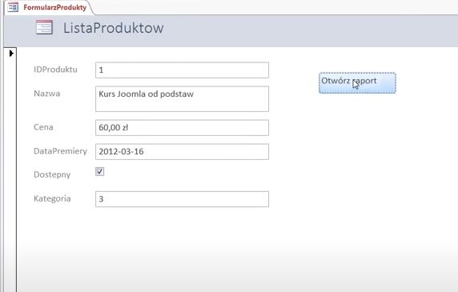

Budowa formularzy dodających dane do bazy.
Tworzenie pustego formularza w programie Access
- Aby utworzyć formularz niezawierający kontrolek ani sformatowanych wstępnie elementów, na karcie Tworzenie kliknij pozycję Pusty formularz. W programie Access zostanie otwarty pusty formularz w widoku układu i zostanie wyświetlone okienko Lista pól.
- W okienku Lista pól kliknij znak plus (+) obok tabel zawierających pola, które mają być wyświetlane w formularzu.
- Aby dodać pole do formularza, kliknij je dwukrotnie lub przeciągnij do formularza. Aby jednocześnie dodać kilka pól, przytrzymaj wciśnięty klawisz CTRL i kliknij kilka pól, a następnie przeciągnij je wszystkie do formularza.
- Za pomocą narzędzi z grupy Kontrolki na karcie Narzędzia układów formularzy można dodać do formularza logo, tytuł, numerację stron lub datę i godzinę.
- Aby dodać do formularza większą liczbę typów kontrolek, kliknij pozycję Projektowanie i skorzystaj z narzędzi dostępnych w grupie Kontrolki.
